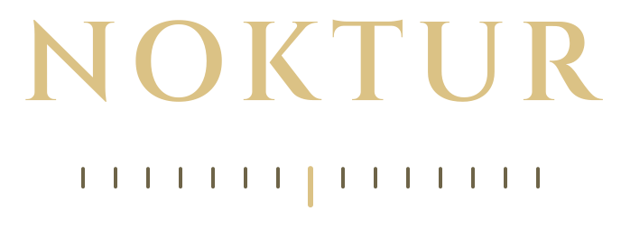

Privacy Policy
Effective November 23, 2026 · Updated for Studio, NOKTUR Pro subscriptions and the Light clock
In short: Your photos, videos, recipes and settings stay on your iPhone. NOKTUR has no account, no ads and no tracking. It connects to the internet only to ask Apple's App Store whether a newer version of NOKTUR is out, and to sell and check NOKTUR Pro, through RevenueCat, which receives a random ID, your NOKTUR Pro purchase history and basic details about your iPhone, never your photos, recipes or settings.
What NOKTUR uses, and why
- Camera. To show the live view and take photos and videos. Everything is processed on your iPhone.
- Microphone. Only when you record video, to record its sound. If you say no, videos are recorded silently.
- Photo library, adding. To save the photos and videos you take.
- Photo library, viewing and editing. Only if you open Studio. It shows your photos so you can put a look on them, saves your edits back to them, and lays the ones you choose on an Exhibit board. If you allow only some photos, Studio sees only those. Studio's picks for BEST OF are scored on your iPhone. Your photos are never uploaded.
- Photos you pick. When you match a photo's look or add a shared recipe from a picture of its card, iOS gives NOKTUR only the picture you chose. It is read on your iPhone and never uploaded.
- Motion. Your phone's tilt moves the light across the camera body on screen. It is used for that effect only and is not recorded.
- Approximate location. Only if you add the Light clock widget and allow it. NOKTUR uses your approximate location, only on your iPhone, to time golden and blue hour. It never leaves your iPhone and is not shared.
What stays on your iPhone
- Your settings and your own recipes are stored on your iPhone.
- Studio's Exhibit boards are stored on your iPhone as a list of which photos they hold, with a small cover picture. Copies of those photos made to draw a board are temporary and are deleted when you leave Studio.
- The camera you open from the lock screen and the app share your settings through iOS, on your iPhone.
- Photos taken while your phone is locked wait in NOKTUR's private storage until you next open the app, which then moves them to your photo library.
Updates
When you open NOKTUR, it asks Apple's App Store, at most once an hour, for the newest version of NOKTUR. The question names only the app; it carries nothing about you, your photos or your settings. If a newer version has been out for a day, NOKTUR asks you to update before you continue. Apple's handling of the request is covered by Apple's privacy policy.
Purchases
NOKTUR Pro is sold through Apple as a monthly or yearly subscription, or as a one-time lifetime purchase. You can manage or cancel a subscription in your Apple Account settings. NOKTUR uses RevenueCat to check whether you have it, to restore it on another iPhone, and to see how many people buy it. For this, RevenueCat receives a random ID created on your iPhone and the history of your NOKTUR Pro purchases and subscription, plus the technical details every request carries: your iPhone's model and iOS version, NOKTUR's version, your language and App Store country, and an identifier Apple gives NOKTUR for your iPhone. None of it is linked to your name, email or Apple Account, and it is not used to track you across other apps. Payment details are handled by Apple and never reach NOKTUR or RevenueCat. See RevenueCat's privacy policy.
MENU › Support ID shows the random ID, so you can share it with us if you ask for help with a purchase.
Sharing
When you share a recipe card, you choose where it goes with the iOS share sheet. NOKTUR does not send it anywhere itself. A card holds the recipe's settings and a small sample picture: the camera's view at the time you share it, or the photo you chose in Studio. An exported LUT file holds only the recipe's colour. Exhibit pages are saved to your photo library, and shared only where you send them.
Crash reports
If you have turned on Share With App Developers in iOS Settings, Apple may send us anonymous crash reports and usage statistics. They do not identify you, and we receive nothing else.
Children
NOKTUR collects nothing about anyone, including children, beyond the purchase record described above.
Changes
If this policy changes, the new version will be posted on this page with a new effective date.
Contact
Questions about privacy: open an issue on GitHub.